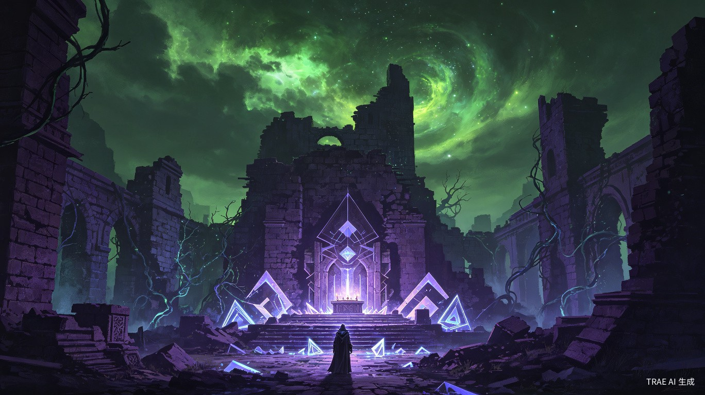
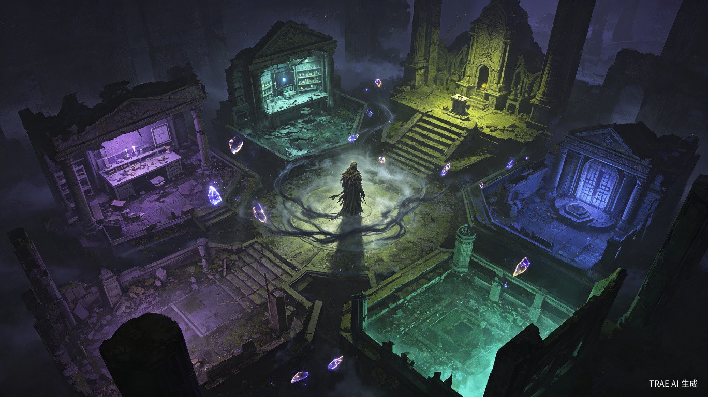
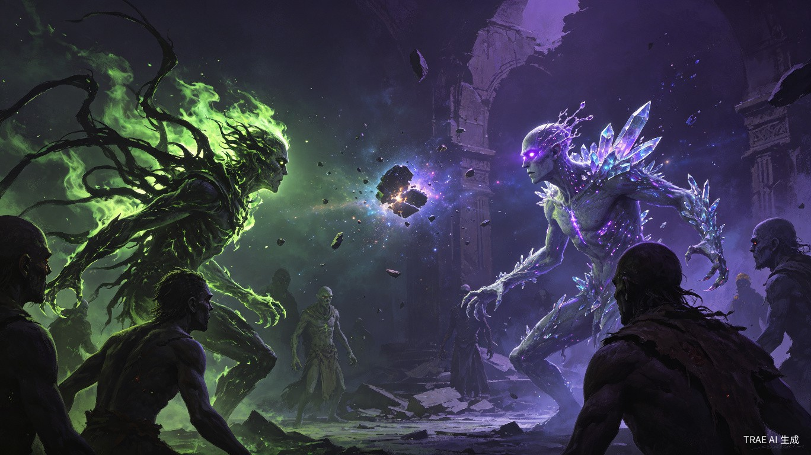
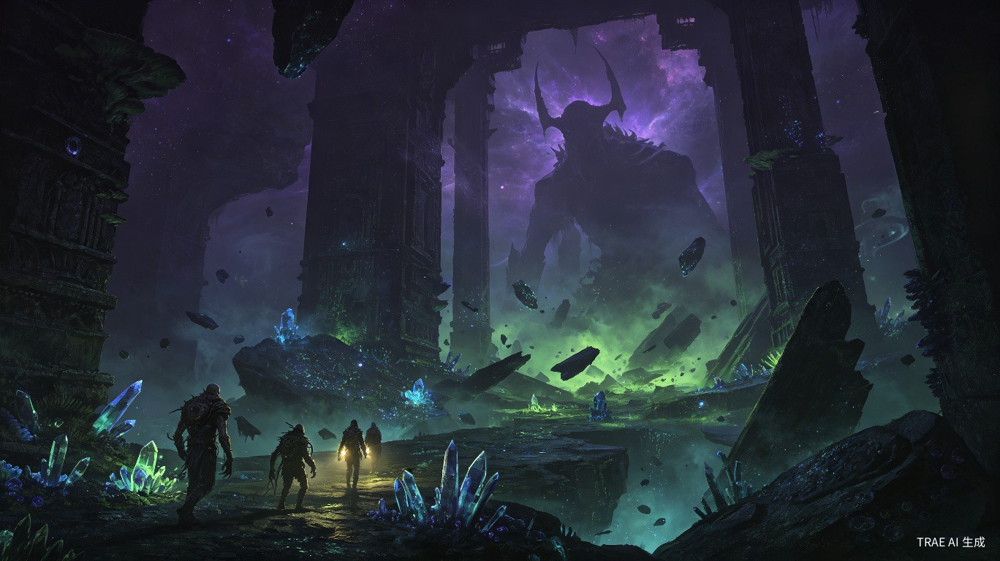

在末世废墟中重建避难所，以建筑拼图孕育序列者，用碎片炼金自由晋升，在古神遗迹中异步竞速。一款融合拼图经营、自由养成与异步对抗的克苏鲁Roguelike独立游戏。
序列深渊是一款以末世克苏鲁为背景的独立游戏，核心玩法融合了拼图式避难所经营、自由组合序列晋升、以及异步遗迹对抗三大系统。玩家扮演一位避难所领袖，在古神苏醒后的废墟世界中，通过建筑布局孕育序列者，收集特性碎片进行自由晋升，派遣序列者进入古神遗迹与其他玩家异步竞速。
游戏将拼图式资源管理、角色轮选驱动、异步对抗与休息区管理、以及建筑组合诞生逻辑等多种策略机制重新编织，赋予其末世序列的克苏鲁叙事，创造出一个既有策略深度又有叙事张力的独特体验。
避难所建筑不是装饰，而是序列者的子宫。建筑布局决定序列者的诞生与能力方向。
没有固定晋升树，特性碎片的标签组合由玩家自己拼凑，创造独一无二的序列者。
与其他玩家在古神遗迹中异步对抗，战前组牌、自动战斗，落败者被污染隔离。
每次晋升积累污染值，污染过高序列变异，爆表则彻底异化，成为隔离区的怪物。
古神从深渊中苏醒，人类文明在疯狂与崩溃中瓦解。幸存者们聚集在废墟之中，以残存的建筑碎片搭建避难所。他们发现，古神遗留的"特性碎片"可以赋予人类超凡能力——这就是序列的起源。
但序列不是礼物，是诅咒。每一次晋升都在侵蚀使用者的理智，污染值在血脉中累积。当污染超过临界点，序列者将不再是人类——他们会变成隔离区里嘶吼的怪物，成为其他幸存者的噩梦。
你是一位避难所领袖。你的任务是在这片疯狂的土地上重建秩序，培育序列者，收集特性碎片，派遣队伍进入古神遗迹争夺资源。其他避难所也在做同样的事。你们不会正面交锋，但遗迹深处的古神遗物有限——谁先拿到，谁就能在下一轮的晋升中占据优势。
"我们不是在与彼此竞争。我们是在与深渊竞速——看谁能先到达终点，而不至于在途中变成它的一部分。"

你在末世废墟中重建一座避难所。每一块建筑拼图都是生存的赌注——实验室产出知识碎片，熔炉淬炼火焰特性，隔离区关押失控的同伴。当实验室与祭坛相邻，知识碎片在其中发酵，一位"窥秘人"从阴影中站起。当训练场与熔炉围合，火焰与血肉交融，"焚血者"在灰烬中睁眼。
建筑布局不是装饰，是序列的子宫。你想培育什么样的序列者，就必须先建造什么样的建筑组合。但废墟空间有限，每一块地块的取舍都在挤压你的野心。同类建筑相邻可以叠放产出，节省空间却可能单调；异类建筑组合诞生变异序列，强大但不可控。
每回合你从避难所设施中选取一个"行动角色"，不同角色赋予本回合不同的行动能力。选实验室，本回合专注研究；选祭坛，尝试沟通古神获取高阶碎片；选隔离区，稳定失控者的精神状态。其他玩家的避难所也在同步运转，你们看不见彼此的手牌，却在遗迹入口处狭路相逢。
这就是经营层的核心张力：你想孕育什么，就必须先建造什么；你建造了什么，就决定了你能成为什么。
序列者不是天生的，是碎片拼凑出来的。战斗从遗迹带回的每一块碎片都有标签——火焰、阴影、知识、血肉、时间、空间。在特定建筑组合中，消耗碎片进行晋升。火焰加血肉诞生"焚血者"，阴影加知识诞生"窥影者"，三个火焰叠加走向"炎魔"的极端。
每个序列者有一个主标签锚定身份，副标签作为变异。主标签"火焰"的序列者，副标签"血肉"会让他的燃烧以生命为代价，副标签"空间"会让他的火焰撕裂现实。没有固定晋升树，只有你自己的配方。
但自由伴随代价。每次晋升积累污染值，污染过高序列会变异——能力更强，却可能在下一场战斗中突然失控。污染爆表则彻底异化，角色从可用序列者变成隔离区里的怪物，需要占用宝贵的稳定槽位。板凳席只有六格，同类失控者可以叠放，但第七种怪物出现时，避难所的精神防线崩溃，所有序列者污染值飙升。

这不是公平的比赛，是古神遗迹中的生存竞速。你派遣序列者进入遗迹，对手也在同一时刻派遣他们的队伍。双方无法实时干预，只能战前组牌——选择哪些序列者出战、调整碎片配比、设置能力触发优先级。然后翻开遗迹深处的卡牌，序列者自动对抗古神守卫与彼此。
力量值比拼只是表层。序列者的特殊能力在翻牌时触发：窥秘人读取古神文字获得信息优势，焚血者燃烧生命换取瞬间爆发，裂隙行者撕开空间绕过守卫直取核心。但能力用得越多，污染值涨得越快。落败的序列者不是死亡，是被遗迹污染，拖回避难所隔离稳定。
七轮遗迹探索构成一个赛季。每轮根据遗迹深度获得不同价值的古神遗物，遗物最多的两个避难所进入最终遗迹——那里没有守卫，只有古神本身。决赛不再抽取新碎片，但你可以调整牌组，移除过度污染的序列者。赢得决赛的避难所获得古神的一瞥，代价是序列者中至少一人永久失控。
这就是对抗层的核心张力：你越强，就越接近疯狂；你想赢，就必须有人付出代价。
三个核心玩法并非孤立存在，而是通过角色卡和板凳席两个系统紧密编织在一起。
同一张角色卡在三个场景下各司其职。在经营层，它是驱动避难所行动的"轮选角色"；在战斗层，它是参与遗迹对抗的"序列者"；在探索层，它是带队深入Rogue地图的"队长"。角色的能力由建筑组合决定出身，由碎片晋升决定成长方向，由玩家决策决定最终命运。
休息区是整个游戏的核心瓶颈资源。经营中角色被其他玩家针对 → 进休息区；战斗中角色落败 → 进休息区；探索中角色重伤 → 进休息区。休息区容量有限，同类角色可以叠放共鸣稳定，但第七种不同角色出现时，避难所的精神污染过载，所有序列者污染值上升。
| 层级 | 核心机制 | 玩家决策 | 失败代价 |
|---|---|---|---|
| 经营层 | 建筑拼图 + 角色轮选 | 建筑摆放、角色选择、资源分配 | 角色进板凳席 |
| 养成层 | 碎片组合 + 序列晋升 | 碎片取舍、晋升时机、污染控制 | 污染变异或彻底失控 |
| 对抗层 | 异步组牌 + 自动战斗 | 队伍配置、策略优先级、牌组调整 | 角色被污染进板凳席 |

传统经营游戏中，建筑是功能设施，角色是独立单位。在序列深渊中，建筑布局直接决定角色的诞生与能力。玩家不是在"招募"角色，而是在"孕育"角色。这种设计让经营层和养成层天然耦合，每一次建筑摆放都在为未来的战斗做铺垫。
传统RPG的晋升是固定树状结构，玩家只是在选择走哪条分支。序列深渊中，晋升结果由碎片的标签组合动态生成。火焰+血肉是焚血者，火焰+阴影+时间是灰烬先知——没有预设路径，只有玩家的配方。这种设计让每次晋升都是一次实验，每个序列者都是独一无二的。
传统游戏中，"失控"是失败的惩罚。序列深渊中，污染是一种可以被利用的资源。高污染带来强大变异能力，但伴随不可控风险。玩家需要在"安全但平庸"和"强大但疯狂"之间做持续权衡。这种设计让"代价"本身成为策略的一部分。
传统异步对抗通常包装为"比赛"或"竞技"，与克苏鲁氛围冲突。序列深渊中，异步对抗被包装为遗迹竞速——双方同时在古神遗迹中探索，争夺有限资源。落败不是"输了比赛"，是"被遗迹污染"。这种包装让异步机制与叙事浑然一体。
序列深渊面向热爱策略深度与叙事沉浸的独立游戏玩家。核心受众包括：
游戏支持单人模式（对抗AI）和多人异步模式，单局时长控制在30-45分钟，适合碎片时间游玩。
序列深渊的核心理念是：在熟悉的机制中赋予新的意义。拼图经营不是建造城市，是孕育生命；自由晋升不是选择职业，是拼凑疯狂；异步对抗不是比赛竞技，是在深渊中竞速生存。
我们不是在设计一款游戏，是在设计一种体验——让玩家在每一次建筑摆放、每一次碎片组合、每一次派遣决策中，感受到策略的重量和代价的真实。
"深渊在凝视你。但你可以选择凝视回去——只要你不介意眼睛里的东西。"